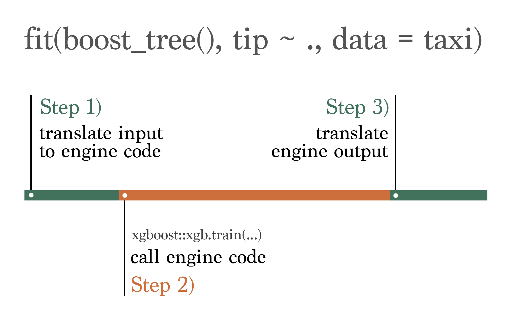
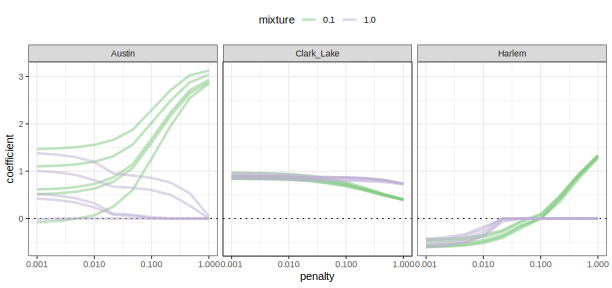

tidymodels
Misc
CV dataset terminology: training, validation, test –> analysis, assessment, test
(I don’t think this is necessary anymore. Outcome may remain categorical) Transform categorical outcome variables to factors
# outside recipe mutate(rain_tomorrow = factor(ifelse(rain_tomorrow, "Rained", "Didn't Rain"))) # skip = TRUE is so this is tried to be applied the test set which won't have the outcome var when its being preprocessed step_mutate(rain_tomorrow = factor(ifelse(rain_tomorrow, "Rained", "Didn't Rain"), skip = TRUE) # this would have 0 and 1 values though step_num2factor(rain_tomorrow)With long running models, you can work with a sample of the data in order to iterate through initial ranges of tuning grids. Once you start to narrow down the range of hyperparameter values, then you can adjust the portion of the data and/or number of folds.
train_fold_small <- train %>% sample_n(4000) %>% vfold_cv(v = 2) # change data obj in resamples arg of tune_gridAccessing a fitted model object to see coefficient values, hyperparameter values, etc.
lin_trained <- lin_workflow %>% finalize_workflow(select_best(lin_tune)) %>% fit(split_obj) # or train_obj or test_ob, etc. lin_trained$fit$fit %>% broom::tidy() # returns a parsnip object extract_fit_parsnip(lin_trained) %>% tidy() # returns an engine specific object xgboost::xgb.importance(model = extract_fit_engine(xgb_fit)Utilizing a sparse matrix with blueprint arg
wf_sparse <- workflow() %>% add_recipe(text_rec, blueprint = sparse_bp) %>% add_model(lasso_spec)estimates, model performance metrics, etc. are unaffected
Advantages
- Speed is gained from any specialized model algorithms built for sparse data.
- The amount of memory this object requires decreases dramatically.
Engines that can utilize a sparse matrix: glmnet, xgboost, and ranger.
If your CV results have close scores –> increase from 5-fold to 10 fold cv
- Can take much longer though
Back-transform predictions if you made a non-recipe transformation of the target variable
# log 10 transformed target variable preds_intervals <- predict( workflows::pull_workflow_fit(lm_wf), workflows::pull_workflow_prepped_recipe(lm_wf) %>% bake(ames_holdout), type = "pred_int", level = 0.90 ) %>% mutate(across(contains(".pred"), ~10^.x))Get CV coefs (?)
get_glmnet_coefs <- function(x) { x %>% extract_fit_engine() %>% tidy(return_zeros = TRUE) %>% rename(penalty = lambda) } parsnip_ctrl <- control_grid(extract = get_glmnet_coefs) glmnet_res <- glmnet_wflow %>% tune_grid( resamples = bt, grid = grid, control = parsnip_ctrl )Showing table of results from multiple models
list( "Original" = unbalanced_model, "Undersampled" = balanced_model, "Smote" = smote_model ) %>% map(tidy) %>% imap(~ select(.x, "Term" = term, !!.y := "estimate")) %>% reduce(inner_join, by = "Term") %>% pretty_print()Extract training times
extract_fit_timedoesn’t include the overhead associated with {tidymodels} — only training time performed by the engineAllows you to choose a much faster model that is almost as good as the best predictive model.
Currently only available in development versions of tidymodels
Also see Tune for xgboost example
Example
taxi_fit <- fit(boost_tree(mode = "classification"), tip ~ ., taxi) extract_fit_time(taxi_fit) #> # A tibble: 1 × 2 #> stage_id elapsed #> <chr> <dbl> #> 1 boost_tree 0.120
{kind=link}
Steps
- set-up
- recipe
- Specify model(s)
- workflow, workflow_set
- fit, fit_resamples, or tune_grid
- autoplot
- collect metrics
- Repeat as necessary
- finalize_workflow
- last_fit
Checks, Debugging
check number of predictors and preprocessing results
check_recipe <- function(recipe_obj) { recipe_obj %>% # already created recipe instructions prep() %>% # instantiates recipe (makes necessary calcs) bake() %>% # executes recipe on data glimpse() }check tuning error
tune_obj$.notes[[2]] # 2 is the fold numbercheck a particular fold after preprocessing
recipe_obj %>% training(cv_obj$splits[[2]]) %>% # 2 is the fold number prep()show_best: Display the top sub-models and their performance estimatesshow_best(tune_obj, "rmse")- example orders models by rmse
Check learning curves after tuning a model
autoplot(tune_obj)
Helpers
predictions + newdata tbl for workflow and stacks objects
augment.workflow <- function(x, newdata, ...) { predict(x, newdata, ...) %>% bind_cols(newdata) } # model_stack is the class of a stack obj augment.model_stack <- function(x, newdata, ...) { predict(x, newdata, ...) %>% bind_cols(newdata) }
Set-up
Some packages
- tidyverse - cleaning
- tidymodels - model building
- scales - loss metrics
- lubridate - ts cleaning functions
- textrecipes - tokenizers, etc.
- themis - up/down-sampling for imbalanced/unbalanced outcomes
- stacks - ensembling
Split
set.seed(2021) spl <- initial_split(dataset, prop = .75) train <- training(spl) test <- testing(spl) train_folds <- train %>% vfold_cv(v = 5)- Might be useful to create a row id column before splitting to keep track of observations after the split
df %>% rowid_to_column(var = "row_id")then usestep_rm(row_id)to remove it in the recipe
- Might be useful to create a row id column before splitting to keep track of observations after the split
Metrics
mset <- metric_set(mn_log_loss)Parallel
library(future) plan(multisession, workers = 10)- As of tune 1.2.0, the {future} framework is recommended and other frameworks will begin to be deprecated.
Grid control options
grid_control <- control_grid( # save the out-of-sample predictions save_pred = TRUE, save_workflow = TRUE, extract = extract_model )ggplot theme
theme_set(theme_light)- Liked this theme for calibration curves
Workflow
format: workflow function, add_recipe, add_model
imb_wf <- workflow() %>% add_recipe(bird_rec) %>% add_model(bag_spec)Can also add
fit(training(splits))to the pipe to go ahead and fit the model if you’re not tuning, etc.Fit multiple models and multiple recipes
preproc <- list(none = basic_recipe, pca = pca_recipe, sp_sign = ss_recipe) models <- list(knn = knn_mod, logistic = lr_mod) wf_set <- workflow_set(preproc, models, cross = TRUE)- cross = TRUE says fit each model with each recipe
Fit
fit: fit a model on a datasetimb_fit <- fit(workflow_obj, data = dat)fit_resample: cross-validationimb_rs <- fit_resamples( workflow_obj, resamples = cv_folds_obj, metrics = metrics_obj ) collect_metrics(imb_rs)- Using
int_pctl(imb_rs, alpha = .1)will calculate percentile 90% CIs for the metrics.
- Using
Tune
Misc
- Every column in a tuning result that’s prefixed with a
.has acollect_*()function associated with it that helps to summarize that column - If after training the model, you’d like to add additional metrics, you can used
compute_metrics. Need save_pred = TRUE in thecontrol_gridobject. - e.g.compute_metrics(xgb_res, metric_set(huber_loss, mape))adds huber loss and mape to thetune_gridobject
- Every column in a tuning result that’s prefixed with a
CV and Tune Model with Multiple Recipes (article)
library(future) plan(multisession, workers = 10) set.seed(345) tune_res <- workflow_map( wf_set, "tune_grid", resamples = cv_folds, grid = 15, metrics = metric_set(accuracy, roc_auc, mn_log_loss, sensitivity, specificity), param_info = parameters(narrower_penalty) )“wf_set is a
workflow_setobject“grid = 15”: this workflow set is only tuning one model, glmnet, and the parameter being tuned is the penalty. So “grid = 15” says try 15 different values.
“narrow_penalty” is
narrower_penalty <- penalty(range = c(-3, 0)Viz:
autoplot(tune_res)
.png)
- Interpretation:
- When accuracy is high, specificity (accuracy at picking negative class) is very high but sensitivity (accuracy at picking positive class) is very low.
- Add middling values of specificity and sensitivity, mean log loss is also middling
- mean log loss is high when sensitivity is high
- AUROC is high at middling values of specificity and sensitivity indicating a best model for discriminating both classes. (but which recipe is this; see next section)
- Workflow Rank (X-Axis): In this example there were 15 values of penalty considered and 2 differerent recipes, so I’m guessing that’s where the 30 comes from.
- Interpretation:
Extract a particular model/recipe combo and viz
.png)
downsample_rs <- tune_rs %>% extract_workflow_set_result("downsampling_glmnet") autoplot(downsample_rs)- Y-Axis: metric value, X-Axis: parameter value (e.g. glmnet penalty value)
- Where “downsampling_glmnet” is the model/recipe combo you want to extract
- Shows how downsampling affects the glmnet model
- Interpretation:
- Looks like the 1st half of workflow set in above viz is the downsampling recipe
- Shows downsampling without recalibration of the predicted probabilities results in a model that can only pick 1 class well based on the penalty
- The GOF metrics: high accuracy, low mean log loss, high auroc prefer the model that picks the negative class really well.
Show results ordered by a metric
rank_results(tune_rs, rank_metric = "mn_log_loss")- results ordered from best to worst according to the metric
tune_grid- Format: workflow, data, grid, metrics, control
lin_tune <- lin_wf %>% tune_grid(train_fold, grid = crossing(penalty = 10 ^ seq(-6, -.5, .05)), metrics = mset, # see set-up section control = grid_control) # see set-up sectionTuning multiples of the same hyperparameter
- add id to specification (e.g. recipe step)
- use id name instead of parameter name in grid
step_ns(var1, deg_free = tune("df_var1")) step_ns(var2, def_free = tune("df_var2")) tune_obj <- workflow_obj %>% tune_grid(train_fold, grid = crossing(df_var1 = 1:4, df_var2 = 4:6), metrics = mset, control = grid_control)Grids
{dials}
purrr::crossing
grid = crossing(mtry = 2:7, trees - seq(100, 1000, 100), learn_rate = 0.1)Latin Hypercube
xgb_grid <- grid_latin_hypercube( tree_depth(), min_n = sample(2, 10, 3) loss_reduction = sample(runif(min = 0.01, max = 0.1), 3), sample_size = sample(0.5:0.8, 3), mtry = sample(3:6, 3), learn_rate = sample(runif(min = 0.03, max = 0.1), 3) )- size: total number of parameter value combinations (default: 3)
Random
xgb_grid <- grid_random( tree_depth(), min_n(), loss_reduction(), learn_rate(), finalize(sample_prop(), train_data), finalize(mtry(), train_baked), size = 20 )- size: default: 5
Get coefficients for folds
get_glmnet_coefs <- function(x) { x %>% extract_fit_engine() %>% tidy(return_zeros = TRUE) %>% rename(penalty = lambda) } glmnet_res <- glmnet_wflow %>% tune_grid( resamples = bt, grid = grid, control = control_grid(extract = get_glmnet_coefs) ) glmnet_coefs <- glmnet_res %>% select(id, .extracts) %>% unnest(.extracts) %>% select(id, mixture, .extracts) %>% group_by(id, mixture) %>% # ┐ slice(1) %>% # │ Remove the redundant results ungroup() %>% # ┘ unnest(.extracts) glmnet_coefs %>% select(id, penalty, mixture, term, estimate) %>% filter(term != "(Intercept)") #> # A tibble: 300 × 5 #> id penalty mixture term estimate #> <chr> <dbl> <dbl> <chr> <dbl> #> 1 Bootstrap1 1 0.1 Clark_Lake 0.391 #> 2 Bootstrap1 0.464 0.1 Clark_Lake 0.485 #> 3 Bootstrap1 0.215 0.1 Clark_Lake 0.590 #> 4 Bootstrap1 0.1 0.1 Clark_Lake 0.680 #> 5 Bootstrap1 0.0464 0.1 Clark_Lake 0.746 #> 6 Bootstrap1 0.0215 0.1 Clark_Lake 0.793 #> 7 Bootstrap1 0.01 0.1 Clark_Lake 0.817 #> 8 Bootstrap1 0.00464 0.1 Clark_Lake 0.828 #> 9 Bootstrap1 0.00215 0.1 Clark_Lake 0.834 #> 10 Bootstrap1 0.001 0.1 Clark_Lake 0.837 #> # … with 290 more rowsextract_fit_engineadds an additional column “.extracts” to tuning output“return_zeros” keeps records of variables with penalized coefficients to zero during tuning
Viz
glmnet_coefs %>% filter(term != "(Intercept)") %>% mutate(mixture = format(mixture)) %>% ggplot(aes(x = penalty, y = estimate, col = mixture, groups = id)) + geom_hline(yintercept = 0, lty = 3) + geom_line(alpha = 0.5, lwd = 1.2) + facet_wrap(~ term) + scale_x_log10() + scale_color_brewer(palette = "Accent") + labs(y = "coefficient") + theme(legend.position = "top")- Interpretation
- With a pure lasso model (i.e., mixture = 1), the Austin station predictor is selected out in each resample. With a mixture of both penalties, its influence increases.
- Also, as the penalty increases, the uncertainty in this coefficient decreases.
- The Harlem predictor is either quickly selected out of the model or goes from negative to positive.
- With a pure lasso model (i.e., mixture = 1), the Austin station predictor is selected out in each resample. With a mixture of both penalties, its influence increases.
- Interpretation
Select a faster model that’s almost as predictive as the best model (article)
Currently only available in development versions of tidymodels
Also see Misc for extracting training times from a single model
See article for visualizations
For large datasets, the trees hyperparameter can substantially effect the training time for a boosted tree model or bagged tree model.
Fit model
bt_res <- tune_grid( boosted_tree_mod, tip ~ ., taxi_folds, control = control_grid(extract = extract_fit_time) )Extract predictive metrics and training times
# mean GOF metrics for tuning combos bt_metrics <- collect_metrics(bt_res) # fit times across folds and tuning combos bt_extracts_unnested <- bt_extracts %>% unnest(cols = ".extracts")- Using
int_pctl(bt_rs, alpha = .1)will calculate percentile 90% CIs for the metrics.
- Using
Calculate mean training times and join with GOF metrics
bt_metrics_extracts <- left_join( # summarized metrics across resamples bt_metrics, # summarize fit times across resamples summarize( bt_extracts_unnested, elapsed = mean(elapsed), .by = c(trees, learn_rate, .config) ), by = c("trees", "learn_rate", ".config") ) %>% relocate(elapsed, .before = everything())Select fastest model that’s within 1 standard deviation of most predictive model
best_fit <- bt_metrics_extracts %>% filter(.metric == "roc_auc") %>% arrange(desc(mean)) %>% select(mean, std_err, elapsed, .config) best_speedy_fit <- bt_metrics_extracts %>% filter(.metric == "roc_auc") %>% filter(mean >= best_fit$mean - best_fit$std_err) %>% arrange(elapsed) %>% slice(1) best_speedy_fit
{kind=link}
Finalize
Misc
- Make sure to set control option,
ctrl <- control_grid(save_workflow = TRUE) collect_notes(tuning_results)- If you need more information about errors or warnings that occur- To turn off the interactive logging, set the
verbosecontrol option toTRUE
- To turn off the interactive logging, set the
- Make sure to set control option,
fit_best(x, metric = NULL, parameters = NULL, verbose = FALSE, ...)is a shortcut for:best_param <- select_best(tune_results, metric) # or other `select_*()` wflow <- finalize_workflow(wflow, best_param) # or just `finalize_model()` wflow_fit <- fit(wflow, data_set)- x: results of class, “tune_results”, from functions like
tune_*
- x: results of class, “tune_results”, from functions like
Select a simpler model or a more complex model
downsample_rs <- tune_rs %>% extract_workflow_set_result("downsampling_glmnet") best_penalty <- downsample_rs %>% select_by_one_std_err(-penalty, metric = "mn_log_loss") final_fit <- wf_set %>% extract_workflow("downsampling_glmnet") %>% finalize_workflow(best_penalty) %>% last_fit(feeder_split)Selecting a simpler model can reduce chances of overfitting
Selects a model that has a mean log loss score that’s 1 standard deviation from the top mean log loss value
select_by_pct_loss()also available
The first argument is passed to dplyr::arrange
- So with “-penalty,” penalty is a column in the results tibble that you want to sort by and the “-” says you want start at the higher penalty parameter values
A higher penalty (lasso model) means a simpler model
“tune_rs” is a workflow_map object
The last chunk finalizes the original tuneable workflow with this value for the penalty, and then
last_fitfits the model one time to the (entire) training data and evaluates one time on the testing data.Metrics
collect_metrics(final_fit) collect_predictions(final_fit) %>% conf_mat(squirrels, .pred_class)Variable Importance
library(vip) feeder_vip <- extract_fit_engine(final_fit) %>% vi() feeder_vip feeder_vip %>% group_by(Sign) %>% slice_max(Importance, n = 15) %>% ungroup() %>% ggplot(aes(Importance, fct_reorder(Variable, Importance), fill = Sign)) + geom_col() + facet_wrap(vars(Sign), scales = "free_y") + labs(y = NULL) + theme(legend.position = "none")
finalize_model, recipe, workflow
- after finding the best parameter values, this updates the object
lin_wf_best <- lin_wf %>% finalize_workflow(select_best(lin_tune)) # or manually list parameter/vale pairs xgb_wf_best <- lin_wf %>% finalize_workflow(list(mtry = 6, trees = 1200, learn_rate = 0.01)last_fit: fit finalized model on entire learning dataset and collect metricsxgb_wf_best %>% last_fit(initial_split_obj, metrics = metric_set_obj) %>% collect_metrics()Manually
xgb_wf_best %>% fit(train) %>% augment(test, type_predict = "prob") %>% mn_log_loss(churned, .pred_yes)
Predict on new data
xgb_wf_best %>% fit(new_data) %>% predict(newdata, type = "prob") %>% bind_cols(newdata)Predict on test set and score
wflw_fit %>% predict(testing(splits) %>% select(outcome_var)) %>% metric_set(rmse, mae, rsq)(outcome_var, .pred)
Model Specification
Format: model function, set_engine, set_mode (“classification” or “regression”)
bag_spec <- bag_tree(min_n = 10) %>% set_engine("rpart", times = 25) %>% set_mode("classification")Logistic/Linear
# lasso logistic_reg(penalty = tune()) %>% set_engine("glmnet")- function:
logistic_reg,linear_reg- args: penalty (λ), mixture (α) (number or
tune())- penalty grid examples:
10^seq(-7, -1, .1), 10 ^ seq(-6, -.5, .05) - penalty default:
penalty(range = c(-10, 0), trans = log10_trans())- Silge uses
range = c(-3, 0)
- Silge uses
- penalty grid examples:
- args: penalty (λ), mixture (α) (number or
- engines
- types: glm, glmnet, LiblineaR (only logistic), stan, spark, keras
- Liblinear
- built for large data
- faster than using glmnet even w/sparse matrix
- requires mixture = 0 or 1; default: 0 (ridge)
- also regularizes intercept which affects coef values
- built for large data
- glmnet
- mixture default = 1 (lasso)
- spark
- mixture default = 0 (ridge)
- args
path_values: sequence of values for penalty- assigns a collection of penalty values used by each glmnet fit (regardless of the data or value of mixture)
- Without this arg, glmnet uses multiple penalty values which depend on the data set; changing the data (or the mixture amount) often produces a different set of values
- So, if you want to look at results for a specific penalty value, you need to use this arg to make sure its included.
- Without this arg, glmnet uses multiple penalty values which depend on the data set; changing the data (or the mixture amount) often produces a different set of values
- must still give penalty arg a number
- if using ridge, include 0 in sequence of values for penalty
path_values = c(0, 10^seq(-10, 1, length.out = 20)) # example in docs 10^seq(-3, 0, length.out = 10) # drob's range 10 ^ seq(-6, -.5, .05)- assigns a collection of penalty values used by each glmnet fit (regardless of the data or value of mixture)
- function:
Support Vector Machines (SVM)
svm_linear() %>% set_engine("LiblineaR") %>% set_mode("regression")- modes: regression or classification
- engines
- LiblineaR
- built for bigdata (C++ library)
- No probability predictions for classification models
- In order to use tune_grid, metrics must be hard classification metrics (e.g. accuracy, specificity, sensitivity, etc.)
- Won’t be able to adjust thresholds either
- L2-regularized
- kernlab
- kernel = “vanilladot”
- args
- cost: default = 1
- margin: default = 0.1
- LiblineaR
Boosted Trees
xgb_mod <- boost_tree("regression", mtry = tune(), trees = tune(), learn_rate = 0.01, stop_iter = tune()) %>% set_engine("xgboost")- XGBoost
- drob says
- logging predictors has no effect on this algorithm
- args
- mtry
- trees
- learn_rate
- tree_depth
- stop_iter: early stopping; stops if no improvement has been made after this many iterations
- drob says
- XGBoost
Random Forest
rand_forest( mode = "regression", engine = "ranger", mtry = tune(), trees = tune(), min_n = tune() ) %>% set_engine(importance = "permutation", seed = 63233, quantreg = TRUE)- ranger doc
- args
mode: “classification”, “regression”, “unknown”
engine: ranger (default), randomForest, spark
default hyperparameters: mtry, trees, min_n
importance: ‘none’, ‘impurity’, ‘impurity_corrected’, ‘permutation’
num.threads = 1 (default)
quantreg = TRUE for quantile regression
preds <- regr_fit$fit %>% predict(airquality, type = 'quantiles') head(preds$predictions)- Currently have to extract the ranger model in order to obtain quantile predictions
- issue still open
Recipes
Misc
Step args are tunable. Just use
tune()for value in the arg and include it in tune_grid- e.g spline degrees in
step_nsor bs, number of bootstraps instep_impute_bag, or number of neighbors instep_impute_knn
- e.g spline degrees in
recipe(formula, data)recipe(rain_tomorrow ~ date + location + rain_today + min_temp + max_temp + rainfall + wind_gust_speed + wind_speed9am + wind_speed3pm + humidity9am + humidity3pm + pressure9am + pressure3pm + cloud9am + cloud3pm + temp9am + temp3pm + wind_gust_dir + wind_dir9am + wind_dir3pm + rain_today, data = train)Variable selectors
- based on role
has_role, all_outcomes, all_predictors, all_numeric_predictors, all_nominal_predictors
- based on type
has_type, all_numeric, all_nominal
- based on role
Other
zv,nzv- Removes predictors with zero variance or near-zero variance
step_nsv(all_predictors(), freq_cut = 90/10)- freq_cut: ratio that determines when indicator variables with too few 1s or too few 0s are removed.
- default: 95/5
- unique_cut: percentage (not a decimal), number of unique values divided by the total number of samples
- default: 10
-
example_data <- tibble( x1 = c(1, 5, 8, NA, NA, 3), x2 = c(1, NA, 3, 6, 2, 2), x3 = c(NA, NA, NA, NA, NA, NA), x4 = c(7, 8, 4, 2, 1, 1) ) recipe(~ ., data = example_data) |> step_indicate_na(all_predictors()) |> prep() |> bake(new_data = NULL) #> # A tibble: 6 × 8 #> x1 x2 x3 x4 na_ind_x1 na_ind_x2 na_ind_x3 na_ind_x4 #> <dbl> <dbl> <lgl> <dbl> <int> <int> <int> <int> #> 1 1 1 NA 7 0 0 1 0 #> 2 5 NA NA 8 0 1 1 0 #> 3 8 3 NA 4 0 0 1 0 #> 4 NA 6 NA 2 1 0 1 0 #> 5 NA 2 NA 1 1 0 1 0 #> 6 3 2 NA 1 0 0 1 0Creates dummys for the NAs in a column(s)
If you’re doing this, I think you’re assuming the missingness is MNAR (See Missingness)
step_clean_names- From {textrecipes}, astep_*function for the {janitor} function from tidying column namesstep_clean_levels- From {textrecipes}, some levels will produce bad column names if used for other things such as dummy variables, so this function cleans the bad category names.
Transformations
step_log, BoxCox, YeoJohnson, sqrtstep_log(rainfall, offset = 1, base = 2)- If variable has zeros, offset adds 1 to the value.
- base is the log base
splines
step_bs(B-Splines);step_ns(Natural Splines),step_poly(Orthogonal polynomial)deg_free: where larger values –> more complex curves
degree: bs-only, degree of polynomial spline (e.g. 2 quadratic, 3 cubic)
Original variable replaced with “varname_ns_1”
{splines2} versions
- A supplementary package to {splines}. The practical benefits
- I-splines as integrals of M-splines are used for monotone regressions; C-splines as integrals of I-splines are used for shape-restricted regressions
- time-to-event analysis, the derivatives or integrals of the basis functions are needed in inferences
- allows basis functions of degree zero which is useful in some applications
- natural cubic splines more computationally efficient
-
data(ames, package = "modeldata") recipe(Sale_Price ~ Lot_Frontage + Lot_Area, data = ames) |> step_spline_nonnegative(starts_with("Lot_"), deg_free = 3) |> prep() |> bake(new_data = NULL) #> # A tibble: 2,930 × 7 #> Sale_Price Lot_Frontage_1 Lot_Frontage_2 Lot_Frontage_3 Lot_Area_1 Lot_Area_2 #> <int> <dbl> <dbl> <dbl> <dbl> <dbl> #> 1 215000 0.00522 0.00428 0.00117 5.87e-6 9.76e-7 #> 2 105000 0.00543 0.00186 0.000213 2.45e-6 1.24e-7 #> 3 172000 0.00545 0.00190 0.000221 3.00e-6 1.94e-7 #> 4 244000 0.00563 0.00238 0.000335 2.35e-6 1.14e-7 #> 5 189900 0.00528 0.00164 0.000169 2.91e-6 1.81e-7 #> 6 195500 0.00539 0.00179 0.000198 2.09e-6 8.85e-8 #> 7 213500 0.00379 0.000572 0.0000287 9.17e-7 1.58e-8 #> 8 191500 0.00392 0.000624 0.0000331 9.38e-7 1.65e-8 #> 9 236500 0.00366 0.000521 0.0000247 1.03e-6 2.01e-8 #> 10 189000 0.00480 0.00114 0.0000900 1.53e-6 4.57e-8 #> # ℹ 2,920 more rows #> # ℹ 1 more variable: Lot_Area_3 <dbl>
Categorical
- Also see
step_dummy: if there are C levels of the factor, there will be C - 1 dummy variables created and all but the first factor level are made into new columnsstep_other- collapses categories that have a frequency below a specified threshold
- threshold: proportion of total rows that a category will be collapsed into other
- default = 0.05
- grid value examples: 0.001, 0.003, 0.01, 0.03
step_unknown- If NAs aren’t random, they can be pooled into a category called “Unknown”
Imputation
Also see Missingness
tldr;
- Try bag first, knn second
- Seems to me that bag would be more flexible
- rolling would be useful for time series
- Try bag first, knn second
common args
impute_with: arg for including other predictors (besides outcome and variable to be imputed) in the imputation model.step_impute_<method>(var, impute_with = imp_vars(pred1, pred2))“skip” arg: When set to false, this step will not be used when the recipe is baked (unless newdata=NULL)
- useful when down/up-sampling an outcome variable. New data should be asis in the wild. So usecases where the step is good for training but not production.
- default = T for step_filter, slice, sample, naomit
bag
- bagged tree model
- categoricals and numerics can be imputed
- Predictors can have NAs but can’t be included in the list of variables to be imputed
- Guess you could do separate imputation steps if you want to include them as predictors
- speed up by lowering bootstrap replications
# keepX = FALSE says don't return a df of predictions - not sure why that's included (memory optimization?) options = list(nbagg = 5, keepX = FALSE))knn
- K-Nearest Neighbors
- categoricals and numerics can be imputed
- gower distance used (only distance available)
- possible that missing values will still occur after imputation if a large majority (or all) of the imputing variables (predictors?) are also missing
- Can be computationally intensive and is NOT robust to outliers
- neighbors = 5 by default
- options: nthreads, eps (threshold for values to be set to 0, default = 1e-8)
linear, mean, median
- regression model, mean, median
- only numerics can be imputed
- if missingness is missing not at random (MNAR) then mean shouldn’t be used (probably not median either)
mode
- most common value
- discrete variable (maybe only nominal variables)
- if more than one mode, one of them will be chosen at random
roll
- rolling window
- window: window of data that you want to use to calculate the statistic
- For time series, maybe look at a acf, pacf plot to get an idea for a good window size
- statistic: stat to calculate over the window (e.g. mean, median, etc)
- probably takes a custom function with a single arg (data)
- values in the window that would be imputed in previous steps aren’t used to impute the current value.
Up/Down-Sampling
- {themis} for unbalanced outcome variables
- Common args
- “skip”: When set to false, this step will not be used when the recipe is baked (unless newdata=NULL)
- useful when down/up-sampling an outcome variable. New data should be asis in the wild. So usecases where the step is good for training but not production.
- default = T for step_filter, slice, sample, naomit, and themis data balancing steps
- “over_ratio”: desired ratio of num_rows of the minority level(s) to num_rows of the majority level. Default = 1 (i.e. all levels have equal number of rows)
- Example: Bring the minority levels up to about 200 rows each where the majority level has 16562 rows in the data. Therefore, 200/16562 is approx 0.0121. Set over_ratio to 0.0121 and each minority level will have 200 rows in the upsampled dataset.
- “neighbors”: number of clusters, default = 5
- “skip”: When set to false, this step will not be used when the recipe is baked (unless newdata=NULL)
- Upsampling
- All methods handle multi-level factor variables except rose.
- Misc
- Applying SMOTE without re-calibration is bad (paper)
- tldr;
- If time isn’t an issue AND you have a binary variable, rose sounds like a good approach, otherwise use bsmote (probably should tune the all_neighbor option)
- upsample
- repeats rows of minority level until dataset has desired ratio
- smote
- SMOTE alg performs knn, generates points between the that level’s points and the centroid for each cluster
- Preprocessing: Every predictor in the formula must be numeric with no missing data.
- impute missing data and encode all categoricals before using this step
- Generated points can form “bridges” between that level’s outlier points and the main distribution. This is like adding a feature that doesn’t exist in the sample.
- bsmote
- borderline-SMOTE alg is the same as SMOTE except that it generates points in the border region between classes. Ignores outliers in the resampling process.
- Preprocessing: Every predictor in the formula must be numeric with no missing data.
- impute missing data and encode all categoricals before using this step
- all_neighbors; default = FALSE
- FALSE then points will be generated between nearest neighbors in its own class.
- This can produce mini-clusters of points
- TRUE then points will be generated between neighbors of the upsampled class and the other classes.
- May blur the line between clusters (and levels? Therefore potentially making classification tasks more difficult)
- FALSE then points will be generated between nearest neighbors in its own class.
- Only selecting from the borderline region can be an issue if there aren’t that many borderline points in the original dataset.
- adasyn
- similar to SMOTE, but generates the most points from points that have the smallest representation in the data, i.e. generates a lot of outlier or extreme value points.
- Might produce much more stable results with tree models as compared to regression models
- Preprocessing: Every predictor in the formula must be numeric with no missing data.
- impute missing data and encode all categoricals before using this step
- similar to SMOTE, but generates the most points from points that have the smallest representation in the data, i.e. generates a lot of outlier or extreme value points.
- rose
- Uses a “smoothed” bootstrap approach to generate new samples. (paper was incoherent as fuck)
- Only for binary (factor) variables
- Preprocessing: Every predictor in the formula must be numeric with no missing data.
- impute missing data and encode all categoricals before using this step
- no mention of missing data in the docs but probably still a good idea.
- impute missing data and encode all categoricals before using this step
- minority_prop: same function as over_ratio. Default = 0.5
- minority_smoothness and majority_smoothness
- default = 1. Reducing this value will shrink the (resampling?) region in the feature space associated with that class (minority or majority).
- If these regions are too large, the boundary between class regions blurs. If too small, maybe you aren’t getting the variance out of the resampling that you could be getting.
- Downsampling
- Misc
Manually
minority_class <- data %>% count(class) %>% filter(n == min(n)) balanced <- data %>% group_split(class, .keep = TRUE) %>% map_dfr( ~ { if (.x$class[1] == minority_class$class) { .x } else { slice_sample( .x, n = minority_class$n, replace = FALSE ) } } ) balanced %>% count(class) %>% pretty_print()
- tldr;
- none of the methods below sound too bad.
- downsample
- removes majority level(s) rows randomly to match the under_ratio (see over_ratio defintion above)
- nearmiss
- removes majority level(s) rows by undersampling points in the majority level(s) based on their distance to other points in the same level. - Default: neighbors = 5 - Preprocessing: Every predictor in the formula must be numeric with no missing data.
- impute missing data and encode all categoricals before using this step
- tomek
- undersamples by removing pairs of points that each other’s nearest neighbor but are of different levels (tomek links)
- Doesn’t make sense to me this way. SInce it’s binary, maybe the point that’s the majority class gets removed the other point in the pair (minority class) gets saved.
- Only for binary (factor) variables
- Preprocessing: Every predictor in the formula must be numeric with no missing data.
- impute missing data and encode all categoricals before using this step
- undersamples by removing pairs of points that each other’s nearest neighbor but are of different levels (tomek links)
- Misc
Feature Reduction
step_discretize_xgb,step_pca_sparse,step_pca_sparse_bayes,step_pca_truncated- Requires {embed}
-
library(embed) data(ames, package = "modeldata") recipe(Sale_Price ~ Lot_Frontage + Lot_Area, data = ames) |> step_discretize_cart(all_numeric_predictors(), outcome = "Sale_Price") |> prep() |> bake(new_data = NULL) #> # A tibble: 2,930 × 3 #> Lot_Frontage Lot_Area Sale_Price #> <fct> <fct> <int> #> 1 [118.5, Inf] [1.341e+04, Inf] 215000 #> 2 [60.5,81.5) [1.093e+04,1.341e+04) 105000 #> 3 [60.5,81.5) [1.341e+04, Inf] 172000 #> 4 [81.5,94.5) [1.093e+04,1.341e+04) 244000 #> 5 [60.5,81.5) [1.341e+04, Inf] 189900 #> 6 [60.5,81.5) [8639,1.093e+04) 195500 #> 7 [24.5,49.5) [-Inf,8639) 213500 #> 8 [24.5,49.5) [-Inf,8639) 191500 #> 9 [24.5,49.5) [-Inf,8639) 236500 #> 10 [49.5,60.5) [-Inf,8639) 189000 #> # ℹ 2,920 more rows- Fits a decision tree using the numeric predictor against the outcome. Then replaces it with levels, according to the leafs of the tree.
-
data(diamonds, package = "ggplot2") set.seed(1234) recipe(price ~ ., data = diamonds) |> step_dummy(all_nominal_predictors()) |> step_normalize(all_numeric_predictors()) |> step_umap(all_numeric_predictors()) |> prep() |> bake(new_data = NULL) #> # A tibble: 53,940 × 3 #> price UMAP1 UMAP2 #> <int> <dbl> <dbl> #> 1 326 -0.605 5.56 #> 2 326 -1.17 -16.8 #> 3 327 -1.78 -5.43 #> 4 334 -10.7 -12.3 #> 5 335 14.2 2.66 #> 6 336 2.50 1.79 #> 7 336 -5.48 0.914 #> 8 337 7.39 -5.29 #> 9 337 -1.43 -5.95 #> 10 338 -6.38 -0.785 #> # ℹ 53,930 more rows -
library(Matrix) # needs to be loaded for step to work data(ames, package = "modeldata") recipe(Sale_Price ~ ., data = ames) |> step_dummy(all_nominal_predictors()) |> step_nzv(all_numeric_predictors()) |> step_normalize(all_numeric_predictors()) |> step_nnmf_sparse(all_numeric_predictors()) |> prep() |> bake(new_data = NULL) #> # A tibble: 2,930 × 3 #> Sale_Price NNMF1 NNMF2 #> <int> <dbl> <dbl> #> 1 215000 0.192 -0.473 #> 2 105000 -0.366 0.245 #> 3 172000 -0.165 0.141 #> 4 244000 0.255 -0.269 #> 5 189900 0.261 -0.160 #> 6 195500 0.311 -0.316 #> 7 213500 0.187 -0.307 #> 8 191500 0.0956 -0.475 #> 9 236500 0.315 -0.238 #> 10 189000 0.268 -0.112- Converts numeric data into one or more components via non-negative matrix factorization with lasso penalization
-
library(MachineShop) set.seed(1234) recipe(~., data = mtcars) |> step_normalize(all_numeric_predictors()) |> step_kmeans(all_numeric_predictors(), k = 3) |> prep() |> bake(new_data = NULL) #> # A tibble: 32 × 3 #> KMeans1 KMeans2 KMeans3 #> <dbl> <dbl> <dbl> #> 1 0.583 -0.217 -0.823 #> 2 0.583 -0.165 -0.666 #> 3 0.634 -1.01 0.771 #> 4 -0.624 -0.309 1.00 #> 5 -0.703 0.439 -0.666 #> 6 -0.910 -0.327 1.22 #> 7 -0.857 0.918 -0.996 #> 8 0.125 -0.734 1.16 #> 9 0.166 -0.655 1.97 #> 10 0.0166 0.000617 0.684 #> # ℹ 22 more rows -
data(penguins, package = "modeldata") recipe(species ~ bill_length_mm + bill_depth_mm, data = penguins) |> step_impute_mean(all_numeric_predictors()) |> step_depth(all_numeric_predictors(), class = "species") |> prep() |> bake(new_data = NULL) #> # A tibble: 344 × 6 #> bill_length_mm bill_depth_mm species depth_Adelie depth_Chinstrap #> <dbl> <dbl> <fct> <dbl> <dbl> #> 1 39.1 18.7 Adelie 0.349 0 #> 2 39.5 17.4 Adelie 0.145 0 #> 3 40.3 18 Adelie 0.217 0 #> 4 43.9 17.2 Adelie 0.00658 0.0735 #> 5 36.7 19.3 Adelie 0.0789 0 #> 6 39.3 20.6 Adelie 0.0395 0 #> 7 38.9 17.8 Adelie 0.329 0 #> 8 39.2 19.6 Adelie 0.132 0 #> 9 34.1 18.1 Adelie 0.0263 0 #> 10 42 20.2 Adelie 0.0461 0 #> # ℹ 334 more rows #> # ℹ 1 more variable: depth_Gentoo <dbl>- Requires {ddalpha}
- Calculates a centroid from continuous variables and measures the distance the observation is from the centroid. There are various distance measures. The vignette has visual of a 2 dimension case for each distance measure. Contours are drawn around the centroid which give you an idea about the formulation of the distance measure.
- It needs a categorical variable. I think there’s a centroid for each category. Probably works best if that categorical variable is the outcome, but I can also seeing it being useful with an informative categorical predictor.
- A higher depth value means the observation is closer to the centroid.
Examples
Basic workflow (article)
pacman::p_load(tidymodels, embed, finetune, vip) # "Accredation" is the binary outcome set.seed(123) museum_split <- initial_split(museum_parsed, strata = Accreditation) museum_train <- training(museum_split) museum_test <- testing(museum_split) set.seed(234) museum_folds <- vfold_cv(museum_train, strata = Accreditation) # "Subject_Matter" is a high cardinality categorical predictor museum_rec <- recipe(Accreditation ~ ., data = museum_train) %>% update_role(museum_id, new_role = "id") %>% step_lencode_glm(Subject_Matter, outcome = vars(Accreditation)) %>% step_dummy(all_nominal_predictors()) # specify model and workflow xgb_spec <- boost_tree( trees = tune(), min_n = tune(), mtry = tune(), learn_rate = 0.01 ) %>% set_engine("xgboost") %>% set_mode("classification") xgb_wf <- workflow(museum_rec, xgb_spec) # fit doParallel::registerDoParallel() set.seed(345) xgb_rs <- tune_race_anova( xgb_wf, resamples = museum_folds, grid = 15, control = control_race(verbose_elim = TRUE) ) # evaluate collect_metrics(xgb_rs) int_pctl(xgb_rs, alpha = .1) # Calculates percentile 90% CIs for the metrics. # viz for race_anova grid search strategy plot_race(xgb_rs) # fit on whole training set xgb_last <- xgb_wf %>% finalize_workflow(select_best(xgb_rs, "accuracy")) %>% last_fit(museum_split) # evalute final model on test collect_metrics(xgb_last) collect_predictions(xgb_last) %>% conf_mat(Accreditation, .pred_class) xgb_last %>% extract_fit_engine() %>% vip()